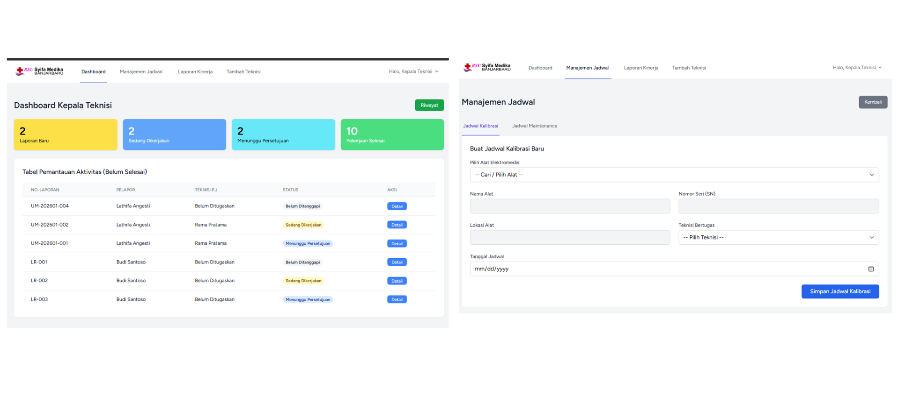
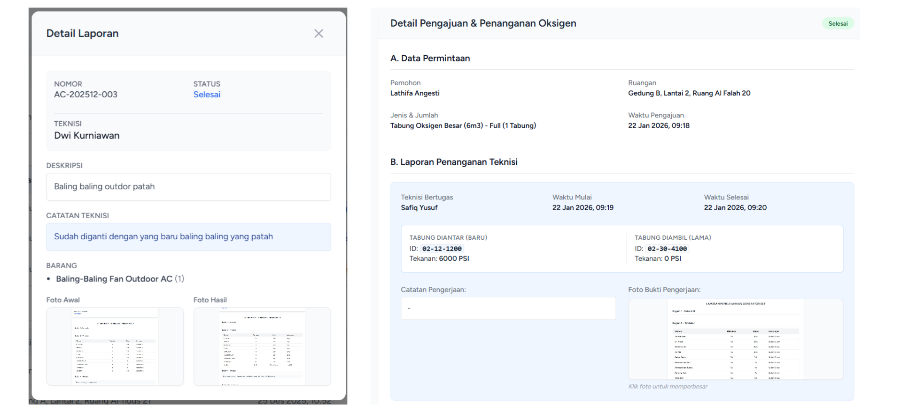
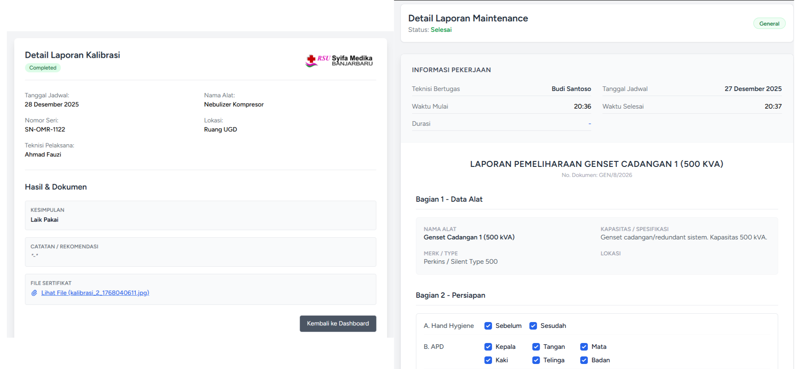

Sistem informasi berbasis web yang dikembangkan selama kegiatan Praktik Kerja Lapangan (PKL) di RSU Syifa Medika Banjarbaru[cite: 89]. Sistem ini dirancang untuk mengintegrasikan pelaporan kerusakan fasilitas & AC secara insidental, manajemen pemeliharaan rutin, kalibrasi alat medis, pemantauan parameter air bersih secara berkala[cite: 103], serta pengelolaan inventaris suku cadang dan tabung oksigen secara terpusat untuk mendukung efisiensi operasional rumah sakit[cite: 114].
Aktor / Role
Tabel Database
Report Export


